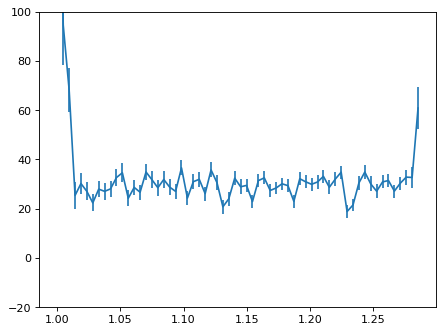
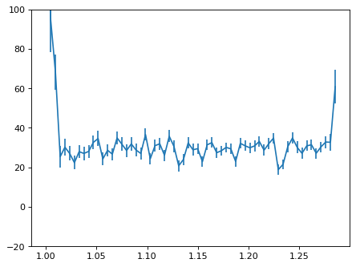

WFSS Spectra Part 0: Optimal Extraction#
Use case: optimal extraction of grism spectra; redshift measurement; emission-line maps. Simplified version of JDox Science Use Case # 33.
Data: JWST simulated NIRISS images from MIRAGE, run through the JWST calibration pipeline; galaxy cluster.
Tools: specutils, astropy, pandas, emcee, lmfit, corner, h5py.
Cross-intrument: NIRSpec
Documentation: This notebook is part of a STScI’s larger post-pipeline Data Analysis Tools Ecosystem.
Introduction#
This notebook is 1 of 4 in a set focusing on NIRISS WFSS data: 1. 1D optimal extraction since the JWST pipeline only provides a box extraction. Optimal extraction improves S/N of spectra for faint sources. 2. Combine and normalize 1D spectra. 3. Cross correlate galaxy with template to get redshift. 4. Spatially resolved emission line map.
This notebook will start with post-pipeline products of NIRISS WFSS, 2D rectified spectra, from spec level3.
Optimal extraction requires source morphology along the cross-dispersion direction, which will be retrieved from direct images taken along with WFSS observations. Morphology along dispersion direction is also essential to infer the spectral resolution, which will be obtained using template fitting to get redshift and stellar population in notebook #3 of this set.
Note: We here assume reduction of the 2D rectified spectrum has been performed at a decent level, i.e. there is no contaminating flux from other sources on the target 2D spectrum, and that background is already subtracted.
%matplotlib inline
import os
import numpy as np
from scipy.ndimage import rotate
from scipy.optimize import curve_fit
from astropy.convolution import Gaussian2DKernel
from astropy.io import fits
from astropy.stats import gaussian_fwhm_to_sigma
from astropy.table import QTable
import astropy.units as u
from astropy.visualization import make_lupton_rgb, SqrtStretch, ImageNormalize, simple_norm
import astropy.wcs as wcs
from astropy.io import ascii
from specutils import Spectrum1D
from astropy.nddata import StdDevUncertainty
import specutils
print('specutils', specutils.__version__)
import astropy
print('astropy', astropy.__version__)
specutils 1.11.0
astropy 5.3.4
The version should be#
specutils 1.0
astropy 4.0.1.post1
import matplotlib.pyplot as plt
import matplotlib as mpl
mpl.rcParams['savefig.dpi'] = 80
mpl.rcParams['figure.dpi'] = 80
0.Download and load data:#
These include pipeline processed data for NIRISS, as well as photometric catalog from image step3.
if not os.path.exists('./pipeline_products'):
import zipfile
import urllib.request
boxlink = 'https://data.science.stsci.edu/redirect/JWST/jwst-data_analysis_tools/NIRISS_lensing_cluster/pipeline_products.zip'
boxfile = './pipeline_products.zip'
urllib.request.urlretrieve(boxlink, boxfile)
zf = zipfile.ZipFile(boxfile, 'r')
zf.extractall()
DIR_DATA = './pipeline_products/'
# Output directory;
DIR_OUT = './output/'
if not os.path.exists(DIR_OUT):
os.mkdir(DIR_OUT)
# Filter for detection and science image;
filt_det = 'f200w'
# Image array from direct image. This is for optimal extraction and masking.
# This image should already be sky-subtracted; otherwise, you will encounter a wrong result with optimal extraction.
infile = '%sl3_nis_%s_i2d_skysub.fits'%(DIR_DATA,filt_det)
hdu = fits.open(infile)
# This is just for error array;
infile = '%sl3_nis_%s_i2d.fits'%(DIR_DATA,filt_det)
hdu_err = fits.open(infile)
data = hdu[0].data
imwcs = wcs.WCS(hdu[0].header, hdu)
err = hdu_err[2].data
weight = 1/np.square(err)
# Segmentation map;
# This can be prepared by running Photutils, if the pipeline does not generate one.
segfile = '%sl3_nis_%s_i2d_seg.fits'%(DIR_DATA, filt_det)
seghdu = fits.open(segfile)
segdata = seghdu[0].data
/tmp/ipykernel_2109/774001514.py:24: RuntimeWarning: divide by zero encountered in divide
weight = 1/np.square(err)
# Load catalog from image level3;
# to obtain source position in pixel coordinate.
catfile = '%sl3_nis_%s_cat.ecsv'%(DIR_DATA, filt_det)
fd = ascii.read('%s'%catfile)
fd
| id | xcentroid | ycentroid | sky_centroid | aper_bkg_flux | aper_bkg_flux_err | aper30_flux | aper30_flux_err | aper50_flux | aper50_flux_err | aper70_flux | aper70_flux_err | aper_total_flux | aper_total_flux_err | aper30_abmag | aper30_abmag_err | aper50_abmag | aper50_abmag_err | aper70_abmag | aper70_abmag_err | aper_total_abmag | aper_total_abmag_err | aper30_vegamag | aper30_vegamag_err | aper50_vegamag | aper50_vegamag_err | aper70_vegamag | aper70_vegamag_err | aper_total_vegamag | aper_total_vegamag_err | CI_30_50 | CI_50_70 | CI_30_70 | is_star | sharpness | roundness | nn_dist | nn_abmag | isophotal_flux | isophotal_flux_err | isophotal_abmag | isophotal_abmag_err | isophotal_vegamag | isophotal_vegamag_err | isophotal_area | semimajor_sigma | semiminor_sigma | ellipticity | orientation | sky_orientation | sky_bbox_ll | sky_bbox_ul | sky_bbox_lr | sky_bbox_ur |
|---|---|---|---|---|---|---|---|---|---|---|---|---|---|---|---|---|---|---|---|---|---|---|---|---|---|---|---|---|---|---|---|---|---|---|---|---|---|---|---|---|---|---|---|---|---|---|---|---|---|---|---|---|---|
| pix | pix | deg,deg | Jy | Jy | Jy | Jy | Jy | Jy | Jy | Jy | Jy | Jy | pix | Jy | Jy | pix2 | pix | pix | deg | deg | deg,deg | deg,deg | deg,deg | deg,deg | |||||||||||||||||||||||||||||
| int64 | float64 | float64 | SkyCoord | float64 | float64 | float64 | float64 | float64 | float64 | float64 | float64 | float64 | float64 | float64 | float64 | float64 | float64 | float64 | float64 | float64 | float64 | float64 | float64 | float64 | float64 | float64 | float64 | float64 | float64 | float64 | float64 | float64 | float64 | float64 | float32 | float64 | float64 | float64 | float32 | float64 | float64 | float64 | float64 | float64 | float64 | float64 | float64 | float64 | float64 | SkyCoord | SkyCoord | SkyCoord | SkyCoord |
| 1 | 1901.4791 | 616.6617 | 3.569653944921018,-30.405070186723776 | 3.483045e-08 | nan | 8.130363e-08 | nan | 1.921404e-07 | nan | 3.765590e-07 | nan | nan | nan | 26.624725 | nan | 25.690953 | nan | 24.960418 | nan | nan | nan | 24.915445 | nan | 23.981673 | nan | 23.251138 | nan | nan | nan | 0.9338 | 0.7305 | 1.6643 | nan | 0.643053 | 0.050833 | 687.142856 | 22.245099 | 3.217875e-06 | nan | 22.631077 | nan | 20.921797 | nan | 83.0 | 2.300009 | 2.249340 | 0.022030 | -68.272405 | 22.344833 | 3.569758007135362,-30.405165289935546 | 3.5697605503538763,-30.404964734861768 | 3.56952547091111,-30.405163096272904 | 3.5695280146070885,-30.404962541203844 |
| 2 | 1215.5473 | 657.4411 | 3.5841636319830568,-30.40446267443482 | 4.591611e-08 | nan | 1.550019e-07 | nan | 3.638838e-07 | nan | 6.725310e-07 | nan | nan | nan | 25.924158 | nan | 24.997593 | nan | 24.330719 | nan | nan | nan | 24.214878 | nan | 23.288313 | nan | 22.621439 | nan | nan | nan | 0.9266 | 0.6669 | 1.5934 | nan | 0.666481 | 0.076069 | 687.142856 | 22.631077 | 4.591563e-06 | nan | 22.245099 | nan | 20.535819 | nan | 95.0 | 2.968964 | 1.778262 | 0.401050 | 89.747234 | 180.364471 | 3.5842476045730627,-30.404590023798825 | 3.5842510319996697,-30.404316539215852 | 3.5840573485032308,-30.404588250016765 | 3.58406077646256,-30.404314765438812 |
| 3 | 381.9250 | 984.5165 | 3.601859711428753,-30.398662437780448 | 4.268341e-08 | nan | 1.404209e-07 | nan | 3.172360e-07 | nan | 6.277053e-07 | nan | nan | nan | 26.031420 | nan | 25.146544 | nan | 24.405610 | nan | nan | nan | 24.322140 | nan | 23.437264 | nan | 22.696330 | nan | nan | nan | 0.8849 | 0.7409 | 1.6258 | nan | 0.672185 | 0.331872 | 673.406986 | 16.320658 | 4.647145e-06 | nan | 22.232034 | nan | 20.522754 | nan | 101.0 | 2.880019 | 1.989674 | 0.309146 | -89.237463 | 1.379775 | 3.6019516675347565,-30.39879122365138 | 3.601955045183127,-30.39851773861101 | 3.6017402841066257,-30.398789281273874 | 3.60174366234683,-30.398515796238758 |
| 4 | 1100.5677 | 1408.4408 | 3.5867654957418873,-30.390792851961756 | 4.182255e-08 | nan | 1.977441e-07 | nan | 4.634087e-07 | nan | 8.557904e-07 | nan | nan | nan | 25.659741 | nan | 24.735090 | nan | 24.069081 | nan | nan | nan | 23.950461 | nan | 23.025810 | nan | 22.359801 | nan | nan | nan | 0.9247 | 0.6660 | 1.5907 | nan | 0.675891 | 0.239616 | 759.750606 | 22.245099 | 4.479109e-06 | nan | 22.272021 | nan | 20.562741 | nan | 78.0 | 2.864331 | 1.524197 | 0.467870 | 89.968483 | 180.585720 | 3.586849890460872,-30.390920199626773 | 3.586853310121526,-30.390646714975425 | 3.586659660970119,-30.390918429617493 | 3.586663081163341,-30.39064494497111 |
| 5 | 662.4288 | 1685.1702 | 3.596088874688556,-30.385833272645225 | 3.108490e-08 | nan | 6.850841e-07 | nan | 1.445057e-06 | nan | 2.486505e-06 | nan | nan | nan | 24.310640 | nan | 23.500287 | nan | 22.911026 | nan | nan | nan | 22.601360 | nan | 21.791007 | nan | 21.201746 | nan | nan | nan | 0.8104 | 0.5893 | 1.3996 | nan | 0.584634 | -0.067064 | 334.076772 | 20.727265 | 5.441945e-06 | nan | 22.060615 | nan | 20.351335 | nan | 71.0 | 1.874113 | 1.820229 | 0.028752 | 10.431093 | 101.048330 | 3.5961919899951726,-30.38591938323127 | 3.5961942522168715,-30.385737059975185 | 3.5959594989853887,-30.38591723639035 | 3.5959617616410102,-30.38573491313818 |
| 6 | 319.4990 | 1885.3035 | 3.60338188710553,-30.382251101963146 | 3.326749e-08 | nan | 6.893335e-07 | nan | 1.514847e-06 | nan | 2.523116e-06 | nan | nan | nan | 24.303927 | nan | 23.449078 | nan | 22.895157 | nan | nan | nan | 22.594647 | nan | 21.739798 | nan | 21.185877 | nan | nan | nan | 0.8548 | 0.5539 | 1.4088 | nan | 0.581781 | 0.158721 | 111.504109 | 22.028328 | 5.666923e-06 | nan | 22.016632 | nan | 20.307352 | nan | 75.0 | 1.894424 | 1.866322 | 0.014834 | 14.267744 | 104.884981 | 3.603486459620283,-30.38233965159385 | 3.603488932995949,-30.382139095884135 | 3.6032539769794103,-30.38233751766547 | 3.6032564508323546,-30.382136961959965 |
| 7 | 266.9182 | 1983.6317 | 3.604515260247416,-30.380468545121307 | 3.310798e-08 | nan | 7.155692e-07 | nan | 1.476385e-06 | nan | 2.520043e-06 | nan | nan | nan | 24.263371 | nan | 23.477001 | nan | 22.896480 | nan | nan | nan | 22.554091 | nan | 21.767721 | nan | 21.187200 | nan | nan | nan | 0.7864 | 0.5805 | 1.3669 | nan | 0.593763 | 0.061278 | 111.504109 | 22.016632 | 5.606203e-06 | nan | 22.028328 | nan | 20.319048 | nan | 74.0 | 1.893807 | 1.847921 | 0.024230 | 89.641888 | 180.259126 | 3.6046074836711655,-30.380562964468123 | 3.6046099547002646,-30.380362408741654 | 3.6043961396388418,-30.38056102635311 | 3.6043986111017956,-30.38036047063047 |
Make a broadband flux catalog.#
For a convenient reason, here we compile catalogs into a flux catalog, which will be used in the following notebook (01b).
To run this cell, you will need a photometric catalog of sources, that list sources position and flux for each filter. For now, I use this catalog prepared in another notebook. (“sources_extend_01.cat”)
This catalog can also be used for generic phot-z/SED fitting softwares, like EAZY and gsf (see notebook No.04).
For now, we use an input catalog.#
filts = ['f115w', 'f150w', 'f200w', 'f090w', 'f435w', 'f606w', 'f814w', 'f105w', 'f125w', 'f140w', 'f160w']
eazy_filts = [309, 310, 311, 308, 1, 4, 6, 202, 203, 204, 205]
magzp = 25.0 # magnitude zeropoint in the catalog.
# Read catalog;
fd_input = ascii.read('%ssources_extend_01.cat'%(DIR_DATA))
ra_input = fd_input['x_or_RA']
dec_input = fd_input['y_or_Dec']
# Header;
fw = open('%sl3_nis_flux.cat'%(DIR_OUT), 'w')
fw.write('# id')
for ff in range(len(filts)):
fw.write(' F%d E%d'%(eazy_filts[ff], eazy_filts[ff]))
fw.write('\n')
# Contents;
for ii in range(len(fd['id'])):
rtmp = np.sqrt((fd['sky_centroid'].ra.value[ii] - ra_input[:])**2 + (fd['sky_centroid'].dec.value[ii] - dec_input[:])**2)
iix = np.argmin(rtmp)
for ff in range(len(filts)):
if ff == 0:
fw.write('%d'%(fd['id'][ii]))
mag = fd_input['niriss_%s_magnitude'%filts[ff]][iix]
flux_nu = 10**((mag-magzp)/(-2.5))
# Currently, the catalog does not provide proper error;
# Assuming 5% error for flux.
flux_err_nu = flux_nu * 0.05
fw.write(' %.5e %.5e'%(flux_nu, flux_err_nu))
fw.write('\n')
fw.close()
1.Load 2D spectrum;#
# Which filter, grating, and object?
filt = 'f200w'
#grism = 'G150R'
grism = 'G150C'
id = '00004'
# Zero-indexed number for dither --- the test data here has two dither positions, so 0 or 1.
ndither = 0
file_2d = '%sl3_nis_%s_%s_s%s_cal.fits'%(DIR_DATA, filt, grism, id)
hdu_2d = fits.open(file_2d)
# Align grism direction
# - x-direction = Dispersion (wavelength) direction.
# - y-direction = Cross-dispersion.
# in this notebook.
if grism == 'G150C':
# If spectrum is horizontal;
data_2d = hdu_2d[ndither*7+1].data
dq_2d = hdu_2d[ndither*7+2].data
err_2d = hdu_2d[ndither*7+3].data
wave_2d = hdu_2d[ndither*7+4].data
else:
data_2d = rotate(hdu_2d[ndither*7+1].data, 90)
dq_2d = rotate(hdu_2d[ndither*7+2].data, 90)
err_2d = rotate(hdu_2d[ndither*7+3].data, 90)
wave_2d = rotate(hdu_2d[ndither*7+4].data, 90)
# Get position angle of observation;
hd_2d = hdu_2d[1].header
PA_V3 = hd_2d['PA_V3']
PA_V3
0.0
plt.imshow(data_2d, vmin=0, vmax=1000)
<matplotlib.image.AxesImage at 0x7f7a5f385990>
# Get light profile of the source;
# Again, y is for cross-dispersion, and x is for dispersion directions.
y2d,x2d = data_2d.shape[:]
# Cut out segmentation map;
iix = np.where(fd['id']==int(id))[0][0]
# Target position from image 3 catalog;
ycen = fd['ycentroid'][iix].value
xcen = fd['xcentroid'][iix].value
# Cutout size = y direction of 2D spectrum;
rsq = y2d
sci_cut = data[int(ycen-rsq/2.+0.5):int(ycen+rsq/2.+0.5), int(xcen-rsq/2.+0.5):int(xcen+rsq/2.+0.5)]
seg_cut = segdata[int(ycen-rsq/2.+0.5):int(ycen+rsq/2.+0.5), int(xcen-rsq/2.+0.5):int(xcen+rsq/2.+0.5)]
# Rotate image for PA of Grism observation;
if grism == 'G150C':
sci_rot = rotate(sci_cut, PA_V3)
else:
sci_rot = rotate(sci_cut, PA_V3+90)
WFSS grism is dispersed in a direction of x-axis in the plot below.#
plt.imshow(sci_rot, vmin=0, vmax=1.0)
plt.title('Direct image')
plt.xlabel('Wavelength direction >>>', color='r', fontsize=18)
plt.ylabel('Cross-dispersion direction >>>', color='r', fontsize=18)
Text(0, 0.5, 'Cross-dispersion direction >>>')
2.Get light profile at different x position — This will be used for optimal extraction.#
for ii in range(sci_rot.shape[1]):
flux_tmp = sci_rot[:,ii]
xx_tmp = np.arange(0, len(sci_rot[:,ii]), 1)
plt.plot(xx_tmp, flux_tmp, label='x=%d'%ii)
plt.legend(loc=0, fontsize=8)
<matplotlib.legend.Legend at 0x7f7a5f3ed390>
# Sum along x (disperse) direction
flux_y = np.zeros(len(sci_rot[:,0]), 'float')
for ii in range(sci_rot.shape[0]):
flux_y[ii] = np.sum(sci_rot[ii,:])
# Sky subtraction, if needed.
#sky = np.mean([flux_y[0], flux_y[-1]])
# Normalize;
flux_y[:] /= flux_y.sum()
plt.plot(xx_tmp, flux_y)
plt.xlabel('y-position')
plt.ylabel('Source Flux')
Text(0, 0.5, 'Source Flux')
3.One-dimensional extraction;#
Show pipeline 1D extraction as an example;#
# Normal extraction;
flux_disp1 = np.zeros(x2d, 'float')
err_disp1 = np.zeros(x2d, 'float')
wave_disp1 = np.zeros(x2d, 'float')
for ii in range(x2d): # Wavelength direction.
mask_tmp = (dq_2d[:,ii] == 0) & (err_2d[:,ii]>0)
# Sum within a box;
flux_disp1[ii] = np.sum(data_2d[:,ii][mask_tmp])
err_disp1[ii] = np.sqrt(np.sum(err_2d[:,ii][mask_tmp]**2))
wave_disp1[ii] = wave_2d[0,ii]
plt.errorbar(wave_disp1, flux_disp1, yerr=err_disp1)
plt.xlim(1.7,2.3)
(1.7, 2.3)
Optimal extraction;#
# Following Horne(1986, PASP, 98, 609);
flux_disp = np.zeros(x2d, 'float')
err_disp = np.zeros(x2d, 'float')
wave_disp = np.zeros(x2d, 'float')
# Sigma clipping.
sig = 5.0
for ii in range(x2d): # ii : wavelength element.
# Mask;
# 1. DQ array
# 2. error value
# 3. CR detection
mask_tmp = (dq_2d[:,ii] == 0) & (err_2d[:,ii]>0) & ( (data_2d[:,ii] - flux_y[:] * flux_disp1[ii])**2 < sig**2 * err_2d[:,ii]**2)
ivar = 1. / err_2d[:,ii]**2
num = flux_y[:] * data_2d[:,ii] * ivar
den = flux_y[:]**2 * ivar
flux_disp[ii] = num[mask_tmp].sum(axis=0) / den[mask_tmp].sum(axis=0)
err_disp[ii] = np.sqrt(1./den[mask_tmp].sum(axis=0))
wave_disp[ii] = wave_2d[0,ii]
plt.errorbar(wave_disp, flux_disp, yerr=err_disp)
plt.xlim(1.7,2.3)
(1.7, 2.3)
# Compare;
plt.errorbar(wave_disp, flux_disp, yerr=err_disp, color='r', label='Optimal')
plt.errorbar(wave_disp1, flux_disp1, yerr=err_disp1, color='b', alpha=0.5, label='Box')
plt.ylim(-10, 20000)
plt.legend(loc=0)
plt.xlabel('Wavelength')
Text(0.5, 0, 'Wavelength')
4.Write 1d spectrum out to a file;#
file_1d = '%sl3_nis_%s_%s_s%s_1d_opt.fits'%(DIR_OUT, filt, grism, id)
# Now make it into a Spectrum1D instance.
obs = Spectrum1D(spectral_axis=wave_disp*u.um,
flux=flux_disp*u.MJy,
uncertainty=StdDevUncertainty(err_disp), unit='MJy')
obs.write(file_1d, format='tabular-fits', overwrite=True)
5.Light profile along x-axis = Resolution of dispersed spectrum;#
As WFSS does not have a slit, any dispersed spectrum is affected by source morphology. The estimate on the effective spectral resolution will be needed in the following notebook. And we here try to estimate it beforehand;
for ii in range(sci_rot.shape[0]):
flux_tmp = sci_rot[ii,:]
xx_tmp = np.arange(0, len(sci_rot[ii,:]), 1)
plt.plot(xx_tmp, flux_tmp, label='y=%d'%(ii))
plt.legend(loc=1, fontsize=8)
plt.xlabel('Wavelength direction')
plt.title('Source light profile along dispersed direction', fontsize=14)
Text(0.5, 1.0, 'Source light profile along dispersed direction')
*Unless you are interested in spatially resolved spectra, you can stack and get light profile as a good approximation.#
# Sum along cross-disperse direction
flux_x = np.zeros(len(sci_rot[0,:]), 'float')
for ii in range(sci_rot.shape[0]):
flux_x[ii] = np.sum(sci_rot[:,ii])
# Normalize;
flux_x[:] /= flux_x.sum()
plt.plot(xx_tmp, flux_x, label='Convolution kernel')
plt.legend(loc=2)
<matplotlib.legend.Legend at 0x7f7a59b15790>
Fit with a moffat function;#
# Fitting function with Moffat
# Moffat fnc.
def moffat(xx, A, x0, gamma, alp):
yy = A * (1. + (xx-x0)**2/gamma**2)**(-alp)
return yy
def fit_mof(xx, lsf):
#xx = lsf * 0
#for ii in range(len(lsf)):
# xx[ii] = ii - len(lsf)/2.
popt, pcov = curve_fit(moffat, xx, lsf)
return popt
def LSF_mof(xsf, lsf, f_plot=True):
'''
Input:
=======
xsf : x axis for the profile.
lsf : light profile.
'''
#for ii in range(len(sci[0,:])):
# lsf[ii] = np.mean(sci_rot[int(height/2.-5):int(height/2.+5), ii])
# xsf[ii] = ii - len(lsf)/2.
try:
A, xm, gamma, alpha = fit_mof(xsf, lsf)
except RuntimeError:
print('Fitting failed.')
A, xm, gamma, alpha = -1, -1, -1, -1
pass
if A>0:
lsf_mod = moffat(xsf, A, 0, gamma, alpha)
if f_plot:
yy = moffat(xsf, A, xm, gamma, alpha)
plt.plot(xsf, yy, 'r.', ls='-', label='Data')
plt.plot(xsf, lsf_mod, 'b+', ls='-', label='Model:$gamma=%.2f$\n$alpha=%.2f$'%(gamma, alpha))
plt.legend()
plt.show()
return A, xm, gamma, alpha
# LSF, line spread function
iix_peak = np.argmax(flux_x)
xx_tmp_shift = xx_tmp - xx_tmp[iix_peak]
A, xm, gamma, alpha = LSF_mof(xx_tmp_shift, flux_x)
# Write it down;
# Tha parameters are in unit of pixel.
fm = open('%sl3_nis_%s_%s_s%s_moffat.txt'%(DIR_OUT, filt, grism, id), 'w')
fm.write('# A x0 gamma alp\n')
fm.write('# Moffat function\n')
fm.write('%.3f %.3f %.3f %.3f\n'%(A, xm, gamma, alpha))
fm.close()
Repeat for other filters, other objects.#
The following big colum executes the same processes above for other filters and dither position.#
grism = 'G150C'
id = '00004'
DIR_OUT = './output/'
if not os.path.exists(DIR_OUT):
os.mkdir(DIR_OUT)
filts = ['f115w', 'f150w', 'f200w']
ndithers = np.arange(0, 2, 1)
sig = 5.0
for filt in filts:
print(filt)
# 2d spectrum;
file_2d = '%sl3_nis_%s_%s_s%s_cal.fits'%(DIR_DATA, filt, grism, id)
hdu_2d = fits.open(file_2d)
for ndither in ndithers:
print(ndither)
if grism == 'G150C':
# If spectrum is horizontal;
data_2d = hdu_2d[ndither*7+1].data
dq_2d = hdu_2d[ndither*7+2].data
err_2d = hdu_2d[ndither*7+3].data
wave_2d = hdu_2d[ndither*7+4].data
else:
data_2d = rotate(hdu_2d[ndither*7+1].data, 90)
dq_2d = rotate(hdu_2d[ndither*7+2].data, 90)
err_2d = rotate(hdu_2d[ndither*7+3].data, 90)
wave_2d = rotate(hdu_2d[ndither*7+4].data, 90)
y2d,x2d = data_2d.shape[:]
plt.close()
plt.imshow(data_2d, vmin=0, vmax=300)
plt.show()
# Re-extract 2d image;
#if ndither == 0:
rsq = y2d
sci_cut = data[int(ycen-rsq/2.+0.5):int(ycen+rsq/2.+0.5), int(xcen-rsq/2.+0.5):int(xcen+rsq/2.+0.5)]
seg_cut = segdata[int(ycen-rsq/2.+0.5):int(ycen+rsq/2.+0.5), int(xcen-rsq/2.+0.5):int(xcen+rsq/2.+0.5)]
# Not sure if the offset in extractioin box is bug ;
if grism == 'G150C':
sci_rot = rotate(sci_cut, PA_V3+0)
else:
sci_rot = rotate(sci_cut, PA_V3+0+90)
#
# This is for spectral resolution;
#
# Get light profile along the x-axis
for ii in range(sci_rot.shape[0]):
flux_tmp = sci_rot[ii,:]
xx_tmp = np.arange(0, len(sci_rot[ii,:]), 1)
# Sum along cross-disperse direction
flux_x = np.zeros(len(sci_rot[0,:]), 'float')
for ii in range(sci_rot.shape[0]):
flux_x[ii] = np.sum(sci_rot[ii,:])
# Normalize;
flux_x[:] /= flux_x.sum()
# LSF
iix_peak = np.argmax(flux_x)
xx_tmp_shift = xx_tmp - xx_tmp[iix_peak]
A, xm, gamma, alpha = LSF_mof(xx_tmp_shift, flux_x)
if ndither == 0:
# Write it down;
fm = open('%sl3_nis_%s_%s_s%s_moffat.txt'%(DIR_OUT, filt, grism, id), 'w')
fm.write('# A x0 gamma alp\n')
fm.write('# Moffat function\n')
fm.write('%.3f %.3f %.3f %.3f\n'%(A, xm, gamma, alpha))
fm.close()
#
# This is for Optimal extraction;
#
# Sum along x (disperse) direction
flux_y = np.zeros(len(sci_rot[:,0]), 'float')
for ii in range(sci_rot.shape[0]):
flux_y[ii] = np.sum(sci_rot[ii,:])
# Normalize;
flux_y[:] /= flux_y.sum()
# Following Horne;
flux_disp = np.zeros(x2d, 'float')
err_disp = np.zeros(x2d, 'float')
wave_disp = np.zeros(x2d, 'float')
for ii in range(x2d):
# Mask;
# 1. DQ array
# 2. error value
# 3. CR detection
mask_tmp = (dq_2d[:,ii] == 0) & (err_2d[:,ii] > 0)
ivar = 1. / err_2d[:,ii]**2
num = flux_y[:] * data_2d[:,ii] * ivar
den = flux_y[:]**2 * ivar
flux_disp[ii] = num[mask_tmp].sum(axis=0)/den[mask_tmp].sum(axis=0)
err_disp[ii] = np.sqrt(1./den[mask_tmp].sum(axis=0))
wave_disp[ii] = wave_2d[0,ii]
plt.close()
con_plot = (wave_disp>0)
plt.errorbar(wave_disp[con_plot], flux_disp[con_plot], yerr=err_disp[con_plot])
plt.ylim(-0, 3000)
plt.show()
# Wirte:
# Now make it into a Spectrum1D instance.
file_1d = '%sl3_nis_%s_%s_s%s_ndither%d_1d_opt.fits'%(DIR_OUT, filt, grism, id, ndither)
if wave_disp[1] - wave_disp[0] < 0:
obs = Spectrum1D(spectral_axis=wave_disp[::-1]*u.um,
flux=flux_disp[::-1]*u.MJy,
uncertainty=StdDevUncertainty(err_disp[::-1]), unit='MJy')
else:
obs = Spectrum1D(spectral_axis=wave_disp*u.um,
flux=flux_disp*u.MJy,
uncertainty=StdDevUncertainty(err_disp), unit='MJy')
obs.write(file_1d, format='tabular-fits', overwrite=True)
f115w
0
1
f150w
0
1
f200w
0
1
Another object;#
Absorption line galaxy
grism = 'G150C'
id = '00003'
DIR_OUT = './output/'
filts = ['f115w', 'f150w', 'f200w']
ndithers = np.arange(0,2,1) # There are four dithers in the data set;
sig = 5.0
for filt in filts:
print(filt)
# 2d spectrum;
file_2d = '%sl3_nis_%s_%s_s%s_cal.fits'%(DIR_DATA, filt, grism, id)
hdu_2d = fits.open(file_2d)
for ndither in ndithers:
print(ndither)
if grism == 'G150C':
# If spectrum is horizontal;
data_2d = hdu_2d[ndither*7+1].data
dq_2d = hdu_2d[ndither*7+2].data
err_2d = hdu_2d[ndither*7+3].data
wave_2d = hdu_2d[ndither*7+4].data
else:
data_2d = rotate(hdu_2d[ndither*7+1].data, 90)
dq_2d = rotate(hdu_2d[ndither*7+2].data, 90)
err_2d = rotate(hdu_2d[ndither*7+3].data, 90)
wave_2d = rotate(hdu_2d[ndither*7+4].data, 90)
y2d,x2d = data_2d.shape[:]
plt.close()
plt.imshow(data_2d, vmin=0, vmax=20)
plt.show()
# Re-extract 2d image;
#if ndither == 0:
rsq = y2d
sci_cut = data[int(ycen-rsq/2.+0.5):int(ycen+rsq/2.+0.5), int(xcen-rsq/2.+0.5):int(xcen+rsq/2.+0.5)]
seg_cut = segdata[int(ycen-rsq/2.+0.5):int(ycen+rsq/2.+0.5), int(xcen-rsq/2.+0.5):int(xcen+rsq/2.+0.5)]
# Not sure if the offset in extractioin box is bug ;
if grism == 'G150C':
sci_rot = rotate(sci_cut, PA_V3+0)
else:
sci_rot = rotate(sci_cut, PA_V3+0+90)
#
# This is for spectral resolution;
#
# Get light profile along the x-axis
for ii in range(sci_rot.shape[0]):
flux_tmp = sci_rot[ii,:]
xx_tmp = np.arange(0, len(sci_rot[ii,:]), 1)
# Sum along cross-disperse direction
flux_x = np.zeros(len(sci_rot[0,:]), 'float')
for ii in range(sci_rot.shape[0]):
flux_x[ii] = np.sum(sci_rot[ii,:])
# Normalize;
flux_x[:] /= flux_x.sum()
# LSF
iix_peak = np.argmax(flux_x)
xx_tmp_shift = xx_tmp - xx_tmp[iix_peak]
A, xm, gamma, alpha = LSF_mof(xx_tmp_shift, flux_x)
if ndither == 0:
# Write it down;
fm = open('%sl3_nis_%s_%s_s%s_moffat.txt'%(DIR_OUT, filt, grism, id), 'w')
fm.write('# A x0 gamma alp\n')
fm.write('# Moffat function\n')
fm.write('%.3f %.3f %.3f %.3f\n'%(A, xm, gamma, alpha))
fm.close()
#
# This is for Optimal extraction;
#
# Sum along x (disperse) direction
flux_y = np.zeros(len(sci_rot[:,0]), 'float')
for ii in range(sci_rot.shape[0]):
flux_y[ii] = np.sum(sci_rot[ii,:])
# Normalize;
flux_y[:] /= flux_y.sum()
# Following Horne;
flux_disp = np.zeros(x2d, 'float')
err_disp = np.zeros(x2d, 'float')
wave_disp = np.zeros(x2d, 'float')
for ii in range(x2d):
# Mask;
# 1. DQ array
# 2. error value
# 3. CR detection
mask_tmp = (dq_2d[:,ii] == 0) & (err_2d[:,ii] > 0)
ivar = 1. / err_2d[:,ii]**2
num = flux_y[:] * data_2d[:,ii] * ivar
den = flux_y[:]**2 * ivar
flux_disp[ii] = num[mask_tmp].sum(axis=0)/den[mask_tmp].sum(axis=0)
err_disp[ii] = np.sqrt(1./den[mask_tmp].sum(axis=0))
wave_disp[ii] = wave_2d[0,ii]
plt.close()
con_plot = (wave_disp > 0)
plt.errorbar(wave_disp[con_plot], flux_disp[con_plot], yerr=err_disp[con_plot])
plt.ylim(-20, 100)
plt.show()
# Wirte:
# Now make it into a Spectrum1D instance.
file_1d = '%sl3_nis_%s_%s_s%s_ndither%d_1d_opt.fits'%(DIR_OUT, filt, grism, id, ndither)
if wave_disp[1] - wave_disp[0] < 0:
obs = Spectrum1D(spectral_axis=wave_disp[::-1]*u.um,
flux=flux_disp[::-1]*u.MJy,
uncertainty=StdDevUncertainty(err_disp[::-1]), unit='MJy')
else:
obs = Spectrum1D(spectral_axis=wave_disp*u.um,
flux=flux_disp*u.MJy,
uncertainty=StdDevUncertainty(err_disp), unit='MJy')
obs.write(file_1d, format='tabular-fits', overwrite=True)
f115w
0
1
 

f150w
0
1
f200w
0
1